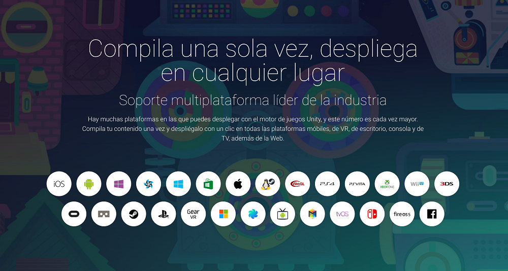
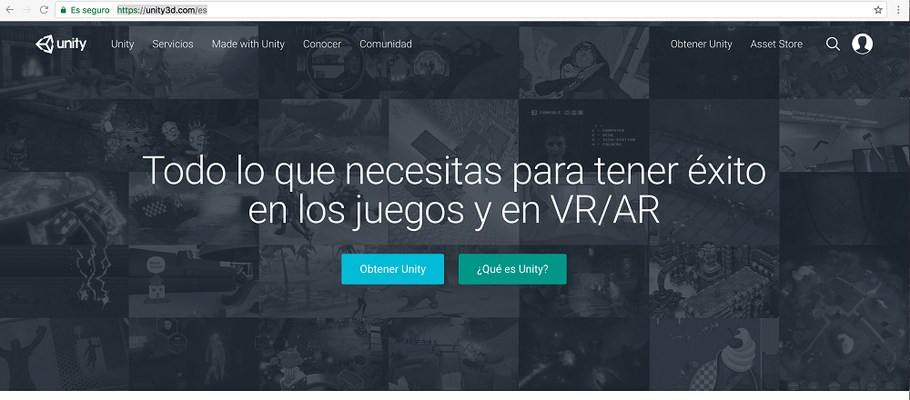
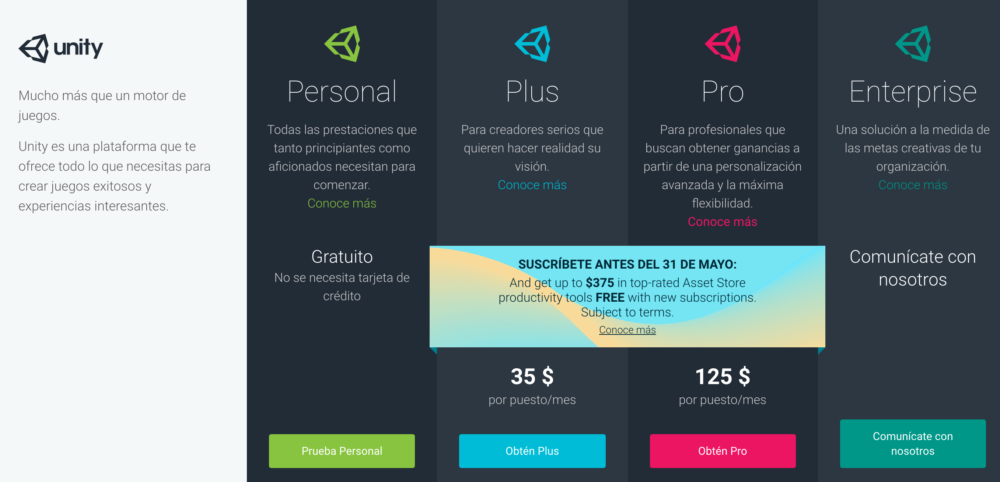
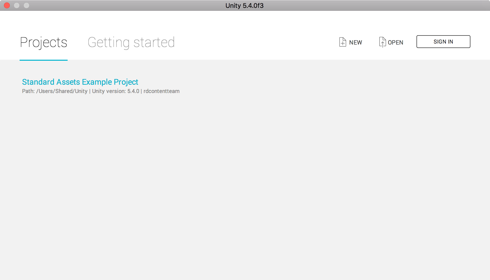
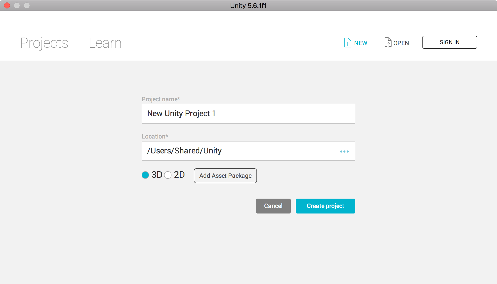
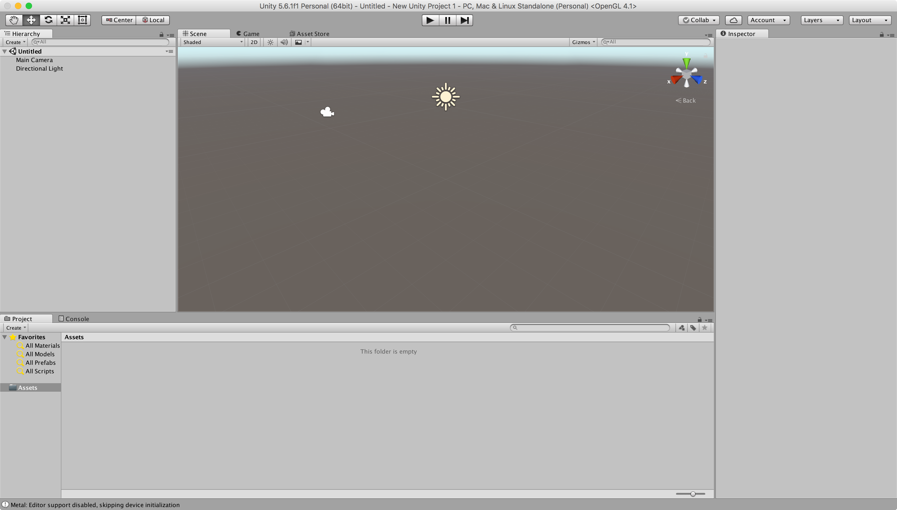

3.3.1.- Unity.
Unity es una herramienta que nos permite desarrollar videojuegos para diversas plataformas. Unity cuenta con su propio editor integrado que, junto con las librerías y API que proporciona el framework de Unitye, nos permite desarrollar juegos para dispositivos móviles, videoconsolas y diversos sistemas informáticos.

Desde la página oficial del proyecto Unity, https://unity3d.com/es podemos descargaros una versión gratuita para comenzar a desarrollar videojuegos. Dicha versión, entre otras, tiene la limitación no comercial. Es decir, con la licencia personal no podemos elaborar aplicaciones con fines comerciales.

En la siguiente imagen podemos ver los distintos tipos de licencia que nos ofrece Unity.

Una vez nos hemos descargado nuestra versión, procedemos a instalarlo en nuestra computadora, mediante un sencillo proceso de instalación. Tras la finalización del mismo podemos acceder a las herramientas de desarrollo que nos ofrece. Una vez que arranquemos Unity, nos preguntará si queremos crear un nuevo proyecto o abrir uno ya existente.

Si elegimos crear un nuevo proyecto, tendremos que elegir entre crear un proyecto en 2D o en 3D.

Una vez hemos creado el proyecto podremos comenzar a trabajar.

Autoevaluación
Selecciones la opción correcta.
Retroalimentación
Falso
Unity es mucho más que un entorno de desarrollo integrado. Es un motor de videojuegos, un conjunto de librerías para el desarrollo de videojuegos y un IDE. Por otra parte solo podemos desarrollar videojuegos con fines comerciales adquiriendo una licencia comercial.